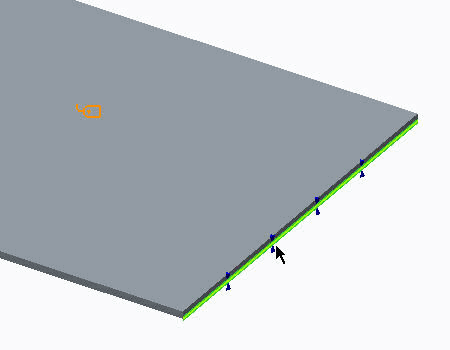
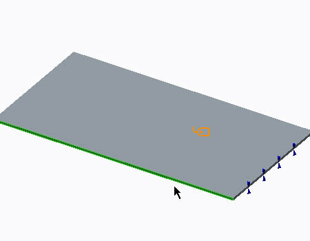
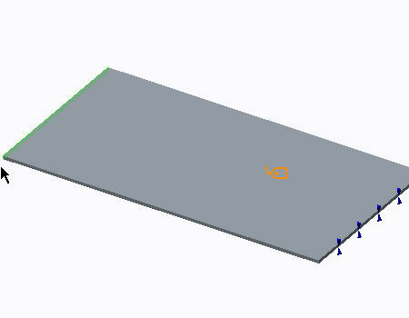
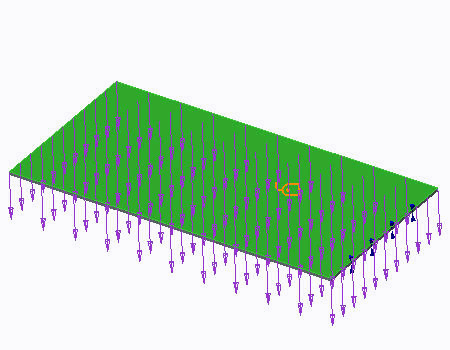
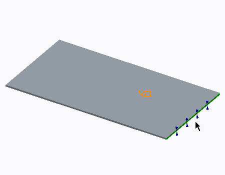
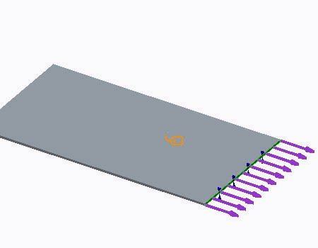
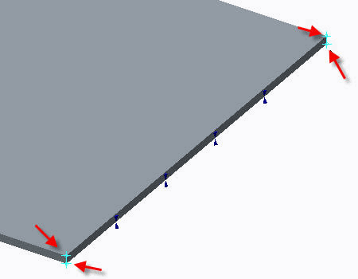
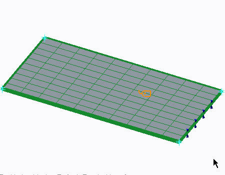

过程: 了解预应力静态分析
“关闭窗口”(Close Window)
 “拭除未显示的”(Erase Not Displayed)
“拭除未显示的”(Erase Not Displayed) 
 Simulate_Analysis\Prestress
Simulate_Analysis\Prestress
SHEETMETAL_PRESTRESSED_SIMULATE.PRT
|
|
||
 |
Creo Parametric 用户打开 SHEETMETAL_PRESTRESSED_LEVER.PRT。 | |
|
|
||
-
任务 1. 定义约束。
1. 在功能区中，选择“主页”(Home) 选项卡。
2. 在“约束”(Constraints) 组中单击“位移”(Displacement)
 。将出现“约束”(Constraint) 对话框。
。将出现“约束”(Constraint) 对话框。
3. 从“参考”(References) 下拉菜单中选择“边/曲线”(Edges/Curves)。
4. 在模型中，选择显示的边。

5. 在“平移”(Translation) 部分中，针对 X 和 Z 平移单击“自由平移”(Free Translation)
 。
。
6. 单击“确定”(OK)。
7. 在功能区中，选择“主页”(Home) 选项卡。
8. 单击“约束”(Constraints) 组下拉菜单，然后选择“对称”(Symmetry) 。将出现“对称约束”(Symmetry Constraint) 对话框。
9. 在模型中，选择显示的曲面。
10. 单击“确定”(OK)。
11. 在功能区中，选择“主页”(Home) 选项卡。
12. 单击“约束”(Constraints) 组下拉菜单，然后选择“对称”(Symmetry) 。将出现“对称约束”(Symmetry Constraint) 对话框。
13. 在模型中，选择显示的曲面。
14. 单击“确定”(OK)。
所有这些约束都是同一个约束集的一部分，因此，在系统上同时运行。

-
任务 2. 定义压力载荷。
1. 在功能区中，选择“主页”(Home) 选项卡。
2. 在“载荷”(Loads) 组中单击“压力载荷”(Pressure Load) 。“压力载荷”(Pressure Load) 对话框随即出现。
3. 单击“新建”(New)。将出现“载荷集定义”(Load Set Definition) 对话框。
4. 在“名称”(Name) 字段中键入 Operational_Pressure。
5. 单击“确定”(OK) 返回“压力载荷”(Pressure Load) 对话框。
6. 在模型中，选择板的顶部曲面。
7. 在“值”(Value) 字段中键入 0.01。
8. 单击“预览”（Preview） 并查看载荷的图形分布。
9. 单击“确定”(OK)。

-
任务 3. 定义纵向预应力载荷。
1. 在功能区中，选择“主页”(Home) 选项卡。
2. 在“载荷”(Loads) 组中单击“力/力矩载荷”(Force/Moment Load)
 。将出现“力/力矩载荷”(Force/Moment Load) 对话框。
。将出现“力/力矩载荷”(Force/Moment Load) 对话框。
3. 单击“新建”(New)。将出现“载荷集定义”(Load Set Definition) 对话框。
4. 在“名称”(Name) 字段中键入 Prestress。
5. 单击“确定”(OK) 返回“力/力矩载荷”(Force/Moment Load) 对话框。
6. 在模型中，选择所显示板的平整曲面。
7. 在“力”(Force) 部分的 Z 字段中键入 -80000。
8. 单击“预览”（Preview） 并查看载荷的图形分布。
9. 单击“确定”(OK)。

-
任务 4. 定义 AutoGEM 控制并网格化模型。
1. 在功能区中，选择“精细模型”(Refine Model) 选项卡。
2. 在 AutoGEM 组中，单击“控制组”(Controls Group) 下拉菜单，然后单击“映射网格”(Mapped Mesh) 。“映射的网格控制”(Mapped Mesh Control) 对话框随即打开。
3. 按住 CTRL 键，并在模型中选择所显示的四个顶点。这些顶点在“第一个面”部分的“参考”中列出。
4. 按住 CTRL 键，并在模型中选择与所使用的前一个面相对的表面上的四个顶点。这些顶点在“第二个面”部分的“参考”中列出。
5. 校验 BRICK1 已被选中，然后在“细分”(Subdivisions) 部分的“默认”(Default) 字段中键入 10。请注意模型中元素细分的图形表示。
6. 单击“确定”(OK)。
7. 在功能区中，选择“精细模型”(Refine Model) 选项卡。
8. 从 AutoGEM 组中单击 AutoGEM
 。将出现 AutoGEM 对话框。
。将出现 AutoGEM 对话框。
9. 单击“创建”(Create) 并检查生成的网格。
10. 单击“关闭”(Close) 以关闭所有对话框并返回至 Creo Simulate 窗口。提示保存网格时单击“否”(No)。
-
任务 5. 定义并运行静态分析和预应力分析。
1. 在功能区中，选择“主页”(Home) 选项卡。
2. 在“运行”(Run) 组中单击“分析和研究”(Analyses and Studies)
 。将出现“分析和设计研究”(Analyses and Design Studies) 对话框。
。将出现“分析和设计研究”(Analyses and Design Studies) 对话框。
3. 单击“文件”(File) > “新建静态分析”(New Static)。将出现“静态分析定义”(Static Analysis Definition) 对话框。
4. 完成以下步骤：
- 在“名称”(Name) 字段中键入 sheetmetal_lin_super。
- 在“约束集/元件”(Constraint Set/Component) 部分，选择 ConstraintSet1。
- 在“载荷集/元件”(Load Set/Component) 部分，选择 Operational_Pressure 和 Prestress。取消选择任何已选择的其他载荷集。
- 单击“收敛”(Convergence) 选项卡，然后从“方法”(Method) 下拉菜单中单击“多通道自适应”(Multi-Pass Adaptive)。
- 在“多项式阶”(Polynomial Order) 部分的“最小”(Minimum) 字段中键入 1，在“最大”(Maximum) 字段中键入 9 。
- 在“限制”(Limits) 部分的“收敛百分比 ”(Percent Convergence) 部分中键入 5。
- 校验“局部位移、局部应变能和全局 RMS 应力”(Local Displacement, Local Strain Energy and Global RMS Stress) 已被选中。
5. 单击“确定”(OK) 返回到“分析和设计研究”(Analyses and Design Studies) 对话框。
6. 单击“文件”(File) > “新建预应力分析”(New Prestress) > “静态”(Static)。“预应力静态分析定义”(Prestress Static Analysis Definition) 对话框随即出现。
7. 完成以下步骤：
- 在“名称”(Name) 字段中键入 sheetmetal_prestressed_non_comb。
- 选择 ConstraintSet1 和 Operational_Pressure 载荷集。取消选择其他任何载荷集。
- 单击“前一分析”(Previous Analysis) 选项卡，然后选择“使用来自前一设计研究的静态分析结果”(Use static analysis results from previous design study)。
- 仅选择 Prestress 载荷集。
- 选择“收敛”(Convergence) 选项卡。
- 从“方法”(Method) 下拉菜单中选择“多通道自适应”(Multi-Pass Adaptive)。
- 在“多项式阶”(Polynomial Order) 部分的“最小”(Minimum) 字段中键入 1，在“最大”(Maximum) 字段中键入 9 。
- 在“限制”(Limits) 部分的“收敛百分比 ”(Percent Convergence) 部分中键入 1。
- 校验“局部位移、局部应变能和全局 RMS 应力”(Local Displacement, Local Strain Energy and Global RMS Stress) 已被选中。
8. 单击“确定”(OK) 返回到“分析和设计研究”(Analyses and Design Studies) 对话框。
9. 选择 sheetmetal_prestressed_non_comb。单击“编辑”(Edit) > “复制”(Copy)。研究的副本将被列出。
10. 在研究副本中单击鼠标右键，然后选择“编辑”(Edit)。“预应力静态分析定义”(Prestress Static Analysis Definition) 对话框随即出现。
11. 完成以下步骤：
- 在“名称”(Name) 字段中键入 sheetmetal_prestressed_combined。
- 单击“前一分析”(Previous Analysis) 选项卡。取消选择“使用来自前一设计研究的静态分析结果”(Use static analysis results from previous design study)。
- 在“载荷集”(Load Set) 部分选择“预应力”(Prestress)。
- 选择“将结果与前一静态分析的结果组合”(Combine Results with Results from Previous Static Analysis)。
12. 单击“确定”(OK) 返回到“分析和设计研究”(Analyses and Design Studies) 对话框。
13. 单击“配置运行设置”(Configure Run Settings)
 。将出现“运行设置”(Run Settings) 对话框。
。将出现“运行设置”(Run Settings) 对话框。
14. 默认情况下，结果和临时输出目录被设置在工作目录中。两种分析都储存在此位置。单击“确定”(OK)。
15. 在“分析和设计研究”(Analyses and Design Studies) 对话框中，选择 sheetmetal_lin_super，然后单击“开始运行”(Start Run)
 。单击“是”(Yes) 以运行交互诊断。
。单击“是”(Yes) 以运行交互诊断。
16. 分析完成后，单击“显示研究状况”(Display Study Status)
 查看汇总报告。
查看汇总报告。
17. 关闭所有对话框并返回至“分析和设计研究”(Analyses and Design Studies) 对话框。
18. 运行剩余的两个分析并查看结果。
19. 仔细检查在汇总文件中显示的信息。请注意最大位移量级和 von Mises 的最大值。请注意，线性组合 (静态) 与在已变形的模型上施加载荷 (预应力) 的效果是不同的。
20. 关闭所有对话框并返回到 Creo Simulate 窗口。
过程就此结束。